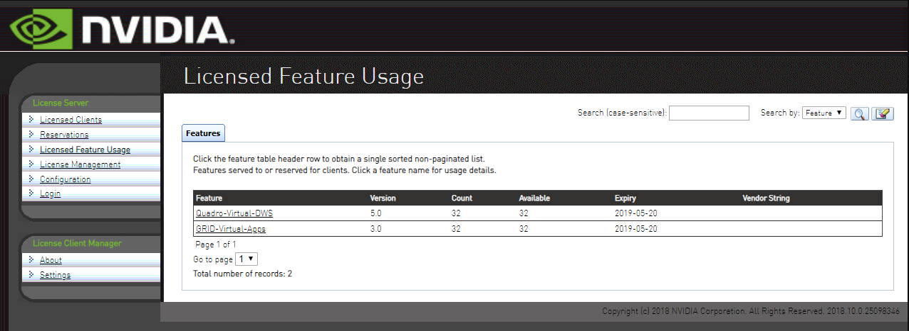

在 Linux KVM 中使用 NVIDIA vGPU
当前 CPU 虚拟化是非常普遍了。 xxx。这篇博文将记录如何在 RHEL/CentOS 下使用 NVIDIA 的 Virtual GPU。
目录
获取 NVIDIA vGPU 软件
安装配置 License Server
安装准备工作
作为 License server，
- 必须有固定的 IP 地址
- 至少一个不变的以太网 MAC 地址。
- 准确的时间，推荐 NTP。
License server 依赖于：
- Java Runtime Environment
- tomcat 和 tomcat-webapps
$ sudo yum install java tomcat tomcat-webapps
$ sudo systemctl enable --now tomcat
如果安装成功， 访问 localhost:8080, 会看到如下类似的页面，

Linux 下安装 License Server
解压下载的 NVIDIA License Server 包如 NVIDIA-ls-linux-2018.10.0.25098346.zip
$ unzip NVIDIA-ls-linux-2018.10.0.25098346.zip && cd NVIDIA-ls-linux-2018.10.0.25098346
$ sh setup.bin
安装结束后，访问 http://localhost:8080/licserver, 应该就能看到如下的页面：

安装配置 Host 宿主机
我们需要在宿主机上安装 NVIDIA vGPU Manager 软件，登陆 NVIDIA Enterprise 后，可以下载 NVIDIA vGPU for RHEL KVM 或 NVIDIA vGPU for Linux KVM，安装里面的 NVIDIA-vGPU-rhel-7.5-410.91.x86_64 或 NVIDIA-Linux-x86_64-410.91-vgpu-kvm 到 Host 宿主机。
安装配置 Guest 虚拟机
需要注意的事情
虚拟的 GPU 在宿主机重启后会消失
每次重启后， vGPU 都需要重新生成，可能有设置使其得以保存。目前需要将 vGPU id 保存下来，宿主机重启后，依照原来的 vGPU ids 来创建 vGPU， 这样分配到各虚拟机的 vGPU 就不需要再进行更改。
License Server 重启后可能需要重新进行配置
LS 重启后，有可能与绑定的网卡解绑了，需要手动确认，然后重新进行配置。(-_-)
参考文献
- Virtual GPU Software R390 for Linux with KVM Release Notes
- Virtual GPU Software User Guide
- Virtual GPU Software R410 for Red Hat Enterprise Linux with KVM Release Notes
- RedHat: 16.7. ASSIGNING GPU DEVICES
- OpenStack Docs: Attaching virtual GPU devices to guests
- OpenStack Docs: Support virtual GPU resources